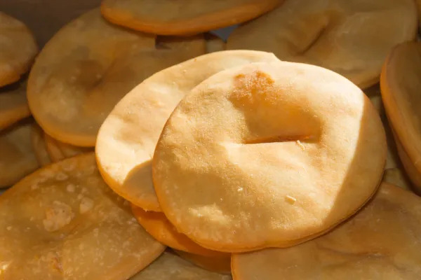

Torta fritas

an Argentinean favorite for rainy days
The torta fritas are a really special dish for argentineans, we eat it specially on rainy days with mates or hot milk and, if you like it, you can put some dulce de leche on top of it to make it really sweet.
They are really easy to make and really cheap.
Ingredients:
- 240 grams of self raising flour
- 2 tablespoons of melted fat
- 1 cup of water (or 200 ml)
- 2 tablespoons of salt
- oil or fat for frying
Steps
- put the flour with the salt on a counter or table. Make a hole in the center of the flour and put there the melted fat with the warm water.
- mix everything, start from the center and finish it on the outside to form a bun.
- once you have the bun formed put it on a counter or table and knead it till the bun becomes smooth. then, cover it with a kitchen towel and let it rest for 20 minutes.
- once the time has passed divide the big bun into smaller ones.
- flatten each bun with your palm and make a cut right in the center.
- in a deep cooking pot or frying pan heat the oil or fat for frying till it reaches 160°C. once the oil or fat is ready start to cook the torta fritas. rotate each of them a few times so they cook properly.
- once the torta fritas reach a brown or gold color take them out and place them on a paper towel.
- final and most important step: enjoy the torta fritas with a mate
credits for the recipe:
Thanks to recetasgratis for the recipe!
Go back to main page